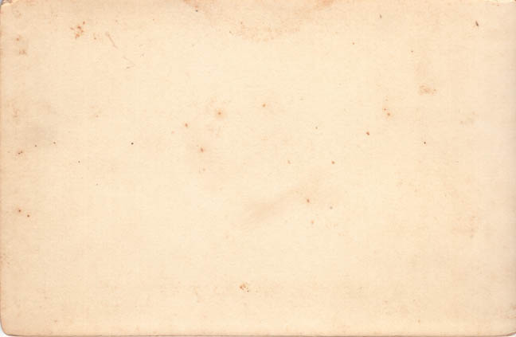
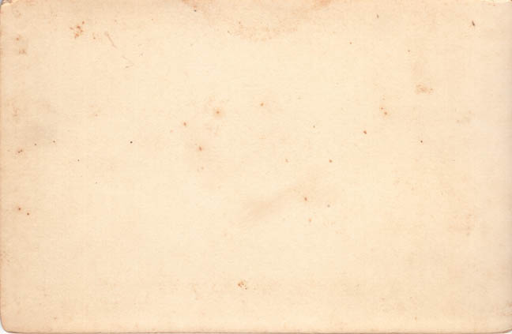

Photographs from the Red Photo Album

Below are individual scans of 21 photos (front and back) that appear in the Red Photo Album. They appear in their original order.
Here is a group photograph that includes John Bunyan Coble Sr. (lower right).
This is a photograph of William John Rudge.
This is a photograph of J.A.M. Coble. On the back it reads "J.A.M. Coble Taken June 3rd 1893".
This is a photograph of Kate Erma nee Rudge Griffith.
Here is a group photograph. There is some faint pencil on the front of the photo that identifies the two women on the right of the photo, "Maud Yates" and "Ala Brand [?]", back and front respectively.
This is a photograph of Kate Erma nee Rudge Griffith when she was a baby. Across the top is written "MRS. JAMES GRIFFITH MONROE NC [phone no.?]".
Here is a group photograph that appears to be a staged photo from a play they might have been in. William John Rudge and his sister, Caroline Virginia nee Rudge Coble appear on the right side.
 

This is a photograph of Harry Woods Coble when he was a small child.
This is a photograph of an unknown man.
This is a photograph of Robert -[?]. The caption reads "To Dear Little Katie With the Best Wishes of Robt. Wash D.C. Aug. 21-88".
This is a photograph of Thomas Pae
This is a photograph of Elizabeth nee Pae Tilley. On the back it reads: "Elizabeth Pae Tilley Sister of Carrie Pae Rudge Born in Richmond Died in Wilmington".
This is a photograph of James Pae. On the back it reads: "James A Pae Born in Richmond Va December 22 1836 Profession Engineer & Mach and run on the Dominic R 14 years as such 1930 1836/94"

This is a photograph of Thomas Pae.
This is a photograph of an unknown baby. The name at the bottom appears to be the name of the photography studio. On the back it reads "March 1889". There are no Rudge, Coble or Pae children born ca. 1889. It might be Georgina Mae Banks, who was born in Savannah ca. 1888.
This is a photograph of an unknown man. He looks like he might be related to the Pae side of our family, but if so, there are no obvious candidates.
This is a photograph of Albert Levy. On the back (altered to increase contrast) in pencil is written "Albert Levy Nov 88 Monroe NC".
This is a photograph of Caroline Virginia nee Rudge Coble. On the back it reads "Jennil [?] to her friend [?] C.V.R".
This is a photograph of an unknown baby. On the back it reads "Rogina Magdelena Green [?]".
This is a photograph of Caroline Virginia nee Rudge Coble when she was a small girl.

This is a photograph of an unknown girl.
Last updated on 3 Mar 2011